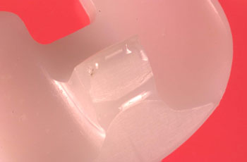

DBEC: Tibial Spine Integrity in Posterior Stabilized Knees
This study looks at the integrity of the post (central eminence) on tibial bearings of posterior stabilized knee prostheses. A testing protocol for determining the relevant loading regimes and failure modes has been developed. Testing equipment and associated instrumentation has been designed and fabricated. A performance standard for the post-and-cam stabilization mechanism will be established by testing knee designs and materials historically used in clinical practice, using appropriate retrieved knee devices available through the Dartmouth Biomedical Engineering Center Retrieval Laboratory. In vitro simulations of tibial spine mechanics are being carried out using computer and laboratory models. Performance of latest-generation bearing materials and of proposed new bearing designs will be evaluated and compared to the performance standard that is based on clinical retrievals.